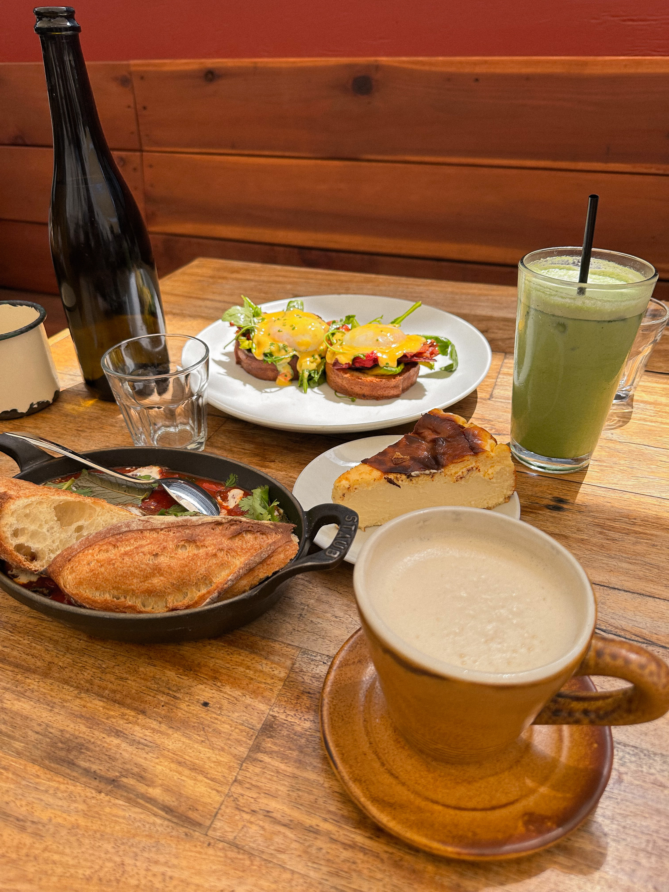
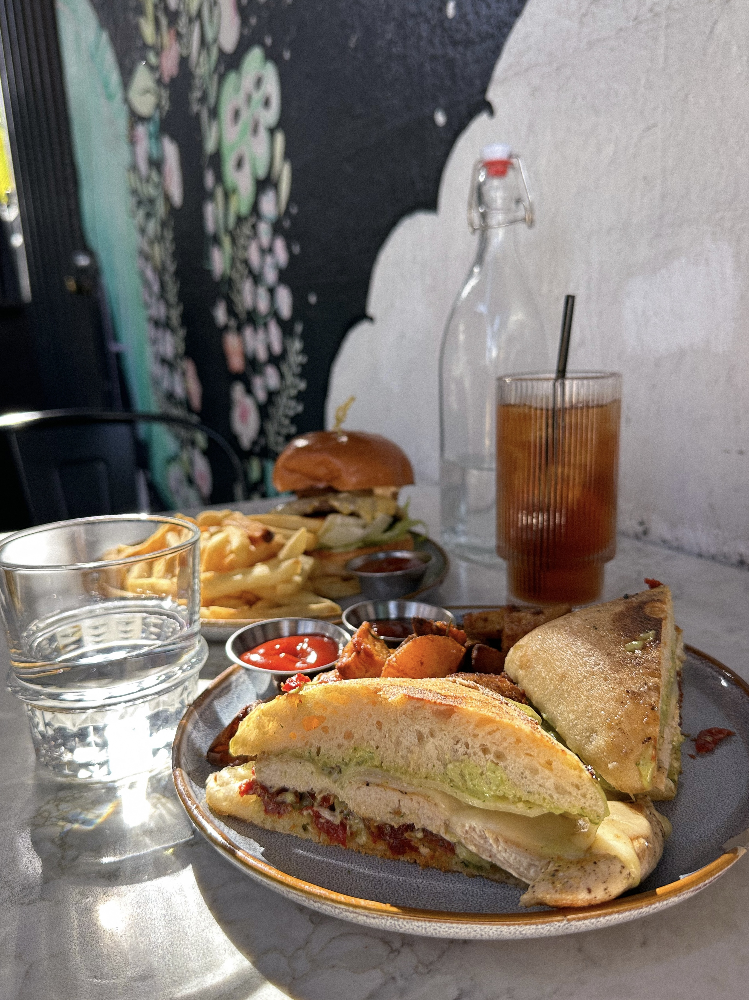

The République Café Bakery & République Restaurant
Homepage Located at 624 S La Brea Ave, Los Angeles, CA 90036, the République is owned by Chefs Walter and Margarita Manzke. The building was constructed in 1929 by Charlie Chapman, but was eventually turned into a restaurant, Campanile Restaurant, coupled with a joint bakery, La Brea Bakery. The front space features a bakery, café, and a bar, whereas the back contains the formal dining area. There is also an outside patio area for dining, as well. The menu is French-inspired and created daily by the chefs. The café and bakery is open daily from 8am to 2pm, and the restaurant is from 5:30pm to 10pm from Tuesdays to Fridays and 5pm to 10pm on Saturdays.
I came to visit this place during the café and bakery hours to have brunch with a friend. I had ordered a shakshouka from the brunch menu, along with a Hong Kong milk tea drink for a beverage and a basque cheesecake for dessert. My friend had ordered a BLT benedict and a matcha latte for her beverage of choice. We had sat outside in the patio area, since the tables inside were full. The overall ambience was very nice, and the food was good.
The Butcher's Daughter
Homepage
Founded by Heather Tierney in 2012, her first vegetarian cafe was established at 10 Kenmare St, New York, NY 10012 in Nolita, a neighborhood in New York. The Butcher's Daughter has two other locations in the areas of New York: Williamsburg and West Village. There are also two locations in California: Venice and West Hollywood. The Butcher's Daughter is a plant-based restaurant, cafe, and juice bar that offers a dailuy-changing menu that is entirely vegetarian, with many vegan and gluten-free options.
My first experience with the Butcher's Daughter was in Venice, California with a friend. It was my first time in Venice, and my friend suggested coming here to eat. We had shared a surfer's burrito and margherita pizza. I had gotten a pure passion pressed juice, and my friend had gotten the matcha master drink. The environment was super aesthetic, with wooden finishes and plants sprawled around. We also came in during a very busy day, but the staff was super nice and patient with us.
H Cafe
Homepage A venue in the H Hotel, the H Cafe is located at 3200 W 8th St, Los Angeles, CA 90005. H Cafe is considered to be very casual, featuring homestyle fare on the menus. They serve foods such as sandwiches and pastas, and beverages like juice, coffees, and cocktails. The brunch menu starts from 9am to 4pm, and the dinner hours are from 5pm to 10pm.
I had gotten a chicken pesto panini with a passionfruit jasmine iced tea as the beverage, and my partner had ordered the H burger. We came in and were able to be seated immediately outside. The staff was very patient and accomodating, and the food was really yummy and filling. The tea automatically came without sugar, but the place has multitudes of sugar options, if you find the drink to be too bitter.